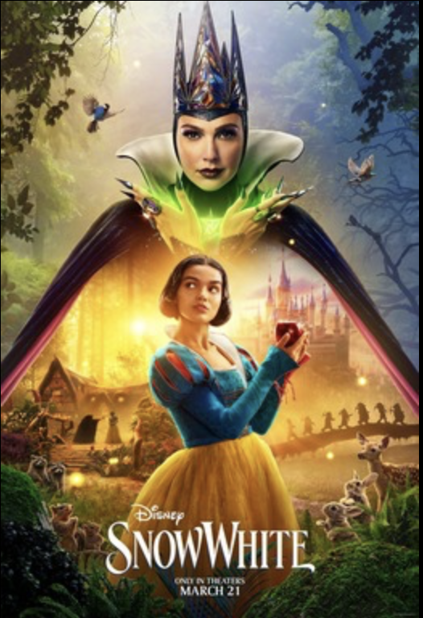
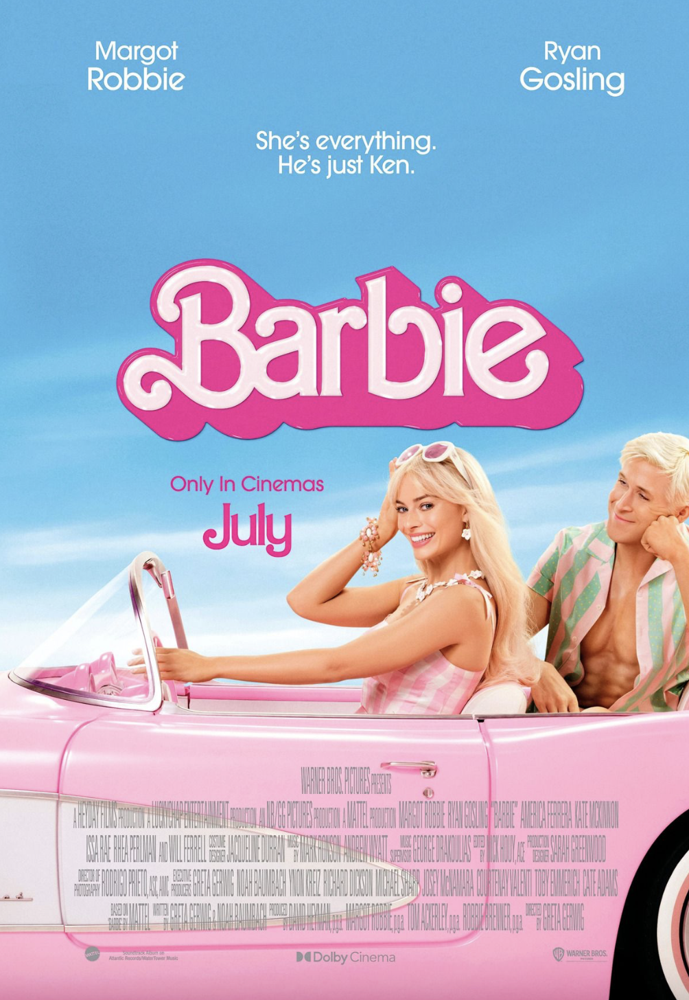
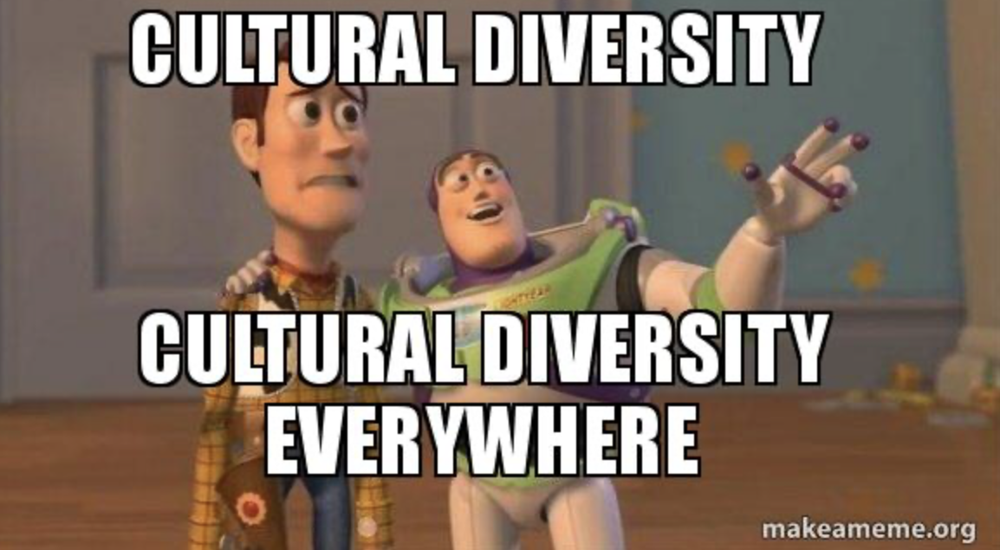
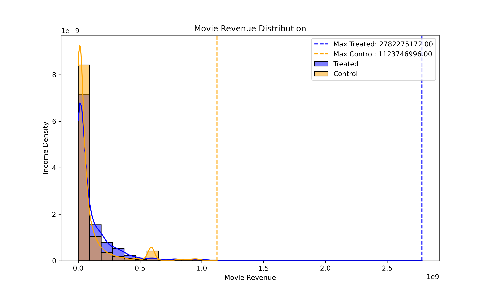
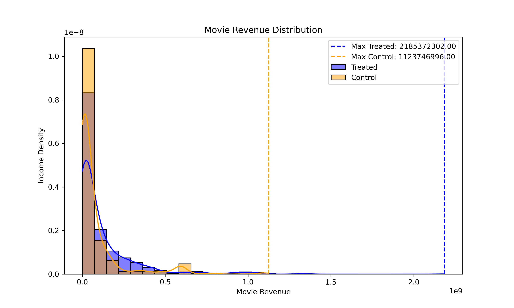
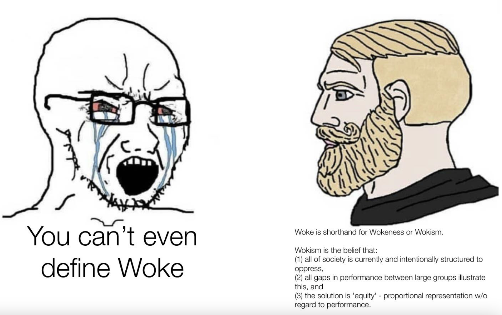

Go Woke, Go Broke?
... Really?
The Urge of Representation
In recent years, the call for diversity representation has grown stronger in media. Indeed, on the one hand, for marginalized groups, positive media representation can be meaningful as it helps them find role models with which they can identify as well as increase their self-esteem.
On the other hand, good diversity exposition through media can assist in reducing stereotypes of underrepresented groups, as well as increasing the empathy of tolerance for the people who are not concerned.
Related Articles:
The Origin Story behind ‘Go Woke, Go Broke’
By reactance to the increase in representation, the say ‘Get Woke, Go Broke’ is born. This sentence finds its origin in the internet and is often used by right-wing groups to boycott media featuring progressive values – such as women’s empowerment, LGBTQIA+ representation, or Critical Race Theory – thus reducing the income of the targeted media.
Related Articles:
Example of movies targeted by ‘Go Woke, go Broke’
The Little Mermaid – Rob Marshal (2023)
Critics: Halle Bailey, the actress who interprets Ariel – the little mermaid, is black instead of being white like in the 1989 animated version.
Queen Cleopatra – Jada Pinkett Smith (2023)

Critics:Adele James, the actress who interprets Cleopatra is black, which is not historically accurate. The movie is also accused of cultural appropriation of Egyptian History.
Snow White – Marc Webb (2025 – Not out yet)
Critics: Rachel Zegler, the actress who interprets Snow white is Hispanic instead of being white like in the 1937 animated version. Moreover, the prince is no longer present in the story. Finally, the 7 dwarfs have been replaced by 7 magical creatures: for which one of the actors is with dwarfism and 6 non-dwarf actors of varying ethnicities.
Counter Example of ‘Go Woke, Go Broke’
Barbie – Greta Gerwig (2023)
Plot: Film that follows the journey of Barbie, the iconic doll, as she embarks on a journey of self-discovery. Living in the utopian world of Barbieland, a matriarchal society, Barbie starts questioning her purpose and identity. Her existential crisis leads her to venture into the real world, where she faces challenges, learns about gender dynamics, and discovers the complexities of human emotions. The film blends humor, fantasy, and social commentary while exploring themes of identity, feminism, and self-empowerment.
Budget: 128–145 million $
Box Office Revenue: 1.446 billion $
Spider-Man: Across the Spider-Verse – Joakim Dos Santos, Kemp Power & Justin K. Thomson (2023)
Plot: Animated superhero film that follows Miles Morales, the young Spider-Man, as he journeys through multiple dimensions. Miles meets various versions of Spider-Man from alternate universes, including Spider-Woman and Spider-Man 2099. Together, they face a new threat that could endanger the multiverse. The film explores themes of identity, responsibility, and the power of teamwork, all while delivering stunning animation and an emotionally charged storyline.
Budget: 100–150 million $
Box Office Revenue: 690.8 million $
Bohemian Rhapsody – Bryan Singer (2018)

Plot: Biographical musical drama about the iconic British rock band Queen and its legendary lead singer, Freddie Mercury. The film chronicles Freddie's rise to fame, his complex personal life, and the band's journey to creating some of the most unforgettable music in rock history. It focuses on Freddie's struggles with his identity, relationships, and the challenges of being in the spotlight, culminating in Queen's historic performance at Live Aid in 1985. The film celebrates the band's music and Freddie Mercury's lasting impact on the world.
Budget: 50–55 million $
Box Office Revenue: 910.8 million $
Google Trends
Google trends associated with 'woke'


Google trends associated with 'go woke go broke'
We took a quick look at google trends for the terms ‘’woke’’ and ‘’go woke, go broke’. We see that these terms mostly come from the USA, and that’s where interest for these terms is highest, followed closely by Anglo countries such as Australia, Canada, New Zealand and the UK. However, the concept is not entirely confined to the Anglosphere, as some non English-Speaking countries such as Russia or France still have a fifth of the US’s rate of research. The peak of the searches for ‘woke’ peaked in August 2024 but it has been in search bars since at least 2020. ‘go woke go broke’ hit its peak in August 2023. It is therefore a contemporary question that is of interest worldwide.
'Go Woke, Go Broke' a fact or a fiction?
What's your opinion?
Go Woke, Really? What the data say...
Introduction
Dataset introduction
The dataset is a collection of metadata from movies and their characters, originating from the CMU Movie Summary Corpus and extended with additional attributes. It includes over 42,000 movie plot summaries and associated metadata like release dates, box office revenue, languages, and countries, in addition to character-level details such as gender, age, height, and ethnicity. The enriched dataset further integrates the newly created feature "Actor Country of Origin” to explore foreign actor representation.
Diversity Attributes
Here, we define diversity as variations in actors' attributes, such as gender, height, ethnicity, and age at the movie's release. Although it would be valuable to study traits like sexual orientation, the available dataset lacks this information. To assess diversity's evolution, we created a diversity score to measure how varied actors' characteristics are within a given year.
Diversity Score Introduction
TO BE COMPLETED
Evolution of the Diversity Score
Evolution of the Height Score
Evolution of the Age Score
Evolution of the Gender Score
Evolution of the Ethnicity Score
Evolution of the Foreign Score
After our trip around the world, this is what we found out!
In order to avoid generalizing a whole country’s performance based on a few movies, we decided for every time period to highlight the boundaries of countries that had produced two movies or less in the decade. Therefore, we know that the results are mostly robust for the countries which are not outlined.
The maps before 1975 for this period show a concentration of movies produced in Western Europe and North America. This is due to historical factors as other parts of the world such as Africa, Asia and Latin America were impoverished, colonized or under communist regimes.
From 1975, we can see more regions join the producing of movies such as South Africa, North Africa, East Asia, and Oceania. This can be explained by the swift economic rise of the Asia Pacific during that period, as well as the early risers following decolonization.
Finally, after the 1990s, we observe a truly globalized production with Eastern European countries and Russia joining in, Latin America and South East Asia. This is probably due to the fall of dictatorships and rising prosperity within these regions. Therefore, we notice that the producer countries’ diversity has definitely increased.
In terms of ethnicity scores, we see that Europe is slightly more ethnically diverse than North America(0.6 vs 0.35). After 1975, we see America catching up and diverse new players such as South Africa, Tunisia, Australia and Norway with high scores of around 0.7. We see even more high performers join in like Indonesia, the Scandinavian countries and Colombia. We see that the global increase comes from the new players but also the old players increasing their score as we see that Europe and North America became a bit more diverse.For foreign actor proportion, we notice that most of the world except for East Asia and South East Asia seems to stagnate. We observe a similar trend for gender diversity where the old Western world increases its scores while some new players like Russia and Morocco came in with more depictions of women in fiction. This trend also happened for age diversity and height diversity with Northern Europe being a world leader.
When it comes to the overall diversity, we definitely make an observation. Not only are more countries making movies, but each individual countries tend to use a more diverse cast.
Matej Part 1
Matej Part 2
Antea Part 1
Antea Part 2
Go Broke, Really? What the data say...
Introduction
Does diversity drive box office success? To answer this, we explored the relationship between diversity and movie revenue through a step-by-step analysis—starting with a naive comparison, accounting for confounding factors through dataset balancing, and testing robustness with a sensitivity analysis.
Movie's Proportion
Naive analysis
We started by performing a naive analysis. We split the movie dataset into two equal datasets: a diverse dataset (diversity score above median diversity score) and a non-diverse dataset. We then looked at their revenue. The data reveals that diverse movies generate significantly higher revenue compared to non-diverse movies across multiple metrics, including average revenue, maximum revenue, and median revenue. Diverse movies have an average box office revenue of $117.4 million, which is nearly 33% higher than the $88.3 million average for non-diverse movies. Additionally, the top-performing diverse movie grossed $2.78 billion, more than twice the maximum revenue of $1.12 billion for non-diverse movies. The higher median and 75th percentile revenues further indicate that diverse movies tend to perform better not just at the extremes but consistently across the dataset. Moreover, a Pearson correlation coefficient of 0.1198 with a P-value of 3.28e-80 indicates a weak yet statistically significant positive correlation between diversity and revenue. While the correlation strength is low, the extremely small P-value confirms that this relationship is not due to random chance.
Imbalanced datasets?
But hold on a minute, you might say... ‘’it’s just that there’s more diversity nowadays! And today’s movies make more money. Checkmate wokebros’’. If you say that, you’re right, you’re pointing to the fact other factors such as the release date impact the probability of being diverse vs non-diverse. Therefore, if other factors diverge between the datasets, we won’t be able to know which of the varied factors actually influence the movie revenue.
We identified some factors that might differ and might impact revenue:
We observe that the diverse dataset (treated) contains more movies with more than one language and more movies with more than one country than the non-diverse dataset (control). It contains slightly more recent movies and also it has more English movies(12356 vs 12236). We therefore balanced the datasets by using propensity matching. We computed the probability of being diverse knowing the other factors. Then we matched samples to construct datasets that are identical in everything except diversity score.
Movie Revenue Distribution
Rebalanced datasets
But hold on a minute, you might say... ‘’it’s just that there’s more diversity nowadays! And today’s movies make more money. Checkmate wokebros’’. If you say that, you’re right, you’re pointing to the fact other factors such as the release date impact the probability of being diverse vs non-diverse. Therefore, if other factors diverge between the datasets, we won’t be able to know which of the varied factors actually influence the movie revenue.
The data from the balanced dataset confirms that diverse movies continue to generate significantly higher revenue compared to non-diverse movies. For diverse movies, the average box office revenue is $117.1 million, compared to only $78.3 million for non-diverse movies, reflecting a substantial difference. Additionally, the top-performing diverse movie grossed $2.19 billion, nearly double the maximum revenue of $1.12 billion for non-diverse movies. The median revenue for diverse movies is $40.4 million, while for non-diverse movies it is much lower at $18.9 million, and the 75th percentile revenue follows a similar trend ($140.9 million for diverse movies versus $71.0 million for non-diverse movies).
The Pearson correlation coefficient of 0.1280 with a P-value of 6.63e-12 indicates a weak but statistically significant positive correlation between diversity and revenue. Despite the correlation strength being relatively low, the extremely small P-value confirms that this relationship is unlikely to be due to random chance. These results suggest that diversity remains a key factor in driving higher revenue. Diverse movies likely perform better because they resonate with a broader, global audience, who are drawn to inclusive storytelling and representation. This broader appeal enhances box office performance and gives diverse movies a competitive edge in the industry.
New Movie Revenue Distribution
Sensitivity analysis
Now you might be thinking ‘’ Fine. You eliminated the other factors in your datasets. But real life is more complicated than your data. There are other factors besides date, language, and country that could influence revenue. Sorry wokebros.’’ You’re absolutely right to be sceptical about this : We therefore performed a sensitivity analysis that evaluates how robust the observed odds ratio (2.14) is to the presence of a hypothetical unmeasured confounding factor, represented by Γ (Gamma). At Γ = 2.5, the lower bound drops below 1 to 0.85, which suggests that a confounding factor with this strength could entirely nullify the observed effect of diversity, leading to no clear difference in revenue.
This analysis highlights that while the observed odds ratio is strong, the existence of a substantial unseen factor (Γ ≥ 2.5) could alter the conclusion. We would argue that such an unseen factor does not exist. The only reasonable other factor that we could think of would be the quality of the movie. We would argue that quality is actually enhanced with a greater diversity of perspectives.
So far, what can we conclude?
Our analysis suggests that diverse movies tend to generate higher revenue compared to non-diverse ones, even after controlling for key factors like release date, language availability, and geographic distribution. While the results show consistent advantages in average, median, and top-performing revenues, the observed Pearson correlations remain weak but statistically significant.
The sensitivity analysis highlights an important nuance: a strong hypothetical unseen factor (Γ ≥ 2.5) could nullify the observed relationship. However, we argue that such a factor—if it exists—is unlikely to explain away the entire effect. For example, while movie quality could be a candidate, diversity may itself enhance quality through richer storytelling and broader appeal. In sum, while diversity appears to play a role in box office performance, the relationship is complex and warrants further investigation.
Maurice Part 1
Maurice Part 2
Matej Part 1
Matej Part 2
What can we conclude?
Limitation of the dataset
The dataset used to investigate the diversity across movies is not perfect for the following reasons:
First of all, the dataset stopped in 2012, at the very beginning of the increase of diversity in the media (2010), before #MeToo (2017), and way before the sentences ‘Go Woke, Go Broke’ was invented (2023).
Secondly, the dataset does not contain all the roles presented in the movies nor all the characters and extras, thus we cannot investigate the demography of the secondary roles.
Thirdly, diversity is not limited to gender, ethnicity, height and age, but can embarrass many other things like sexual orientation and religion among other things, which are not present in our dataset.
Fourthly, often the nationality was entered in the dataset instead of the ethnicity, thus creating a bias toward the country that has clarified the ethnicities of their actors. For instance, in the USA, we can find the categories ‘Native American’, ‘European American’, ‘African American’, ‘Asian American’, ‘Arab American’, etc, whereas in France (which is a country known for its diversity), where present only the category ‘French’.
Last but not least, we think that it is rather the quality of the movies instead of the diversity it contains that impact the box office revenue. In the dataset, there were no means to assess how good each movie is, it could be interesting to redo the data analysis according to the rating of each movie, for instance.
The Oscar Criteria on Diversity
To be eligible for Best Picture Consideration, each movie should meet at least 2 out of 4 of the diversity criteria, one of them:
- On-screen representation, themes, and narratives
- At least one of the lead actors or significant supporting actors submitted for Oscar consideration is from an underrepresented racial or ethnic group in a specific country or territory of production.
- At least 30% of all actors not submitted for Oscar consideration are from at least two underrepresented groups (women, racial or ethnic groups, LGBTQIA+, or people with disabilities).
- The main storyline(s), theme, or narrative of the film is centred on an underrepresented group(s).
- Creative leadership and team project
- At least two of the following creative leadership positions and department heads are from an underrepresented group and at least one of those positions must belong to someone from an underrepresented racial or ethnic group.
- At least six other crew/team and technical positions (excluding Production Assistants) are from an underrepresented racial or ethnic group. These positions include but are not limited to First AD, Gaffer, Script Supervisor, etc.
- At least 30% of the film’s crew is from at least two underrepresented groups.
- Industry access and opportunities
- The film’s distribution or financing company has paid apprenticeships or internships that are from the following underrepresented groups.
- The film’s production, distribution, and/or financing company offers training and/or work opportunities for below-the-line skill development to people from the following underrepresented groups.
- Audience Development
- The studio and/or film company has multiple (more than one) in-house senior executives or hired consultants belonging to at least two underrepresented groups on their creative and development, marketing, publicity, and/or distribution teams. At least one individual must belong to an underrepresented racial or ethnic group.
Even though these inclusion criteria were created for a GOOD PURPOSE, sometimes it feels that secondary characters are created only for the movie to fit them, thus leading to not-well-written characters filled with stereotypical behavior. Those characters might defeat the purpose of diversity inclusion, as they are perpetuating clichés, leading to the essentialization of marginalized groups.
Related Articles:
Conclusion
Our analysis reveals that diversity in movies has significantly increased over time, both in terms of producing countries and within-country representation. Since the 1940s, there has been a marked rise in gender, ethnicity, age, and height diversity within casts. However, this trend is less pronounced when considering the proportion of foreign actors in each country’s productions. This discrepancy has sparked intriguing online debates, including the popular notion that "woke movies bring less money."
Contrary to this belief, our analysis provides substantial evidence that diversity, particularly in terms of a varied and balanced cast, is associated with higher movie revenues. This suggests that diversity, when thoughtfully incorporated, enhances a movie's appeal and commercial success.
However, it is essential to distinguish between genuine diversity, with multidimensional characters, and what some describe as "tokenized" diversity — representation, with 1-dimensional characters being essentialized, included solely to meet quotas without consideration for narrative coherence.
While this study did not explore this more recent phenomenon, it remains a topic of heated discussion and a key element of the "get woke, go broke" debate. Future projects could delve deeper into how different forms of diversity impact financial outcomes.
Overall, our findings highlight the positive role that diversity is growing and that it can play in the film industry, emphasizing its value as a contributor to both cultural representation and economic success.
